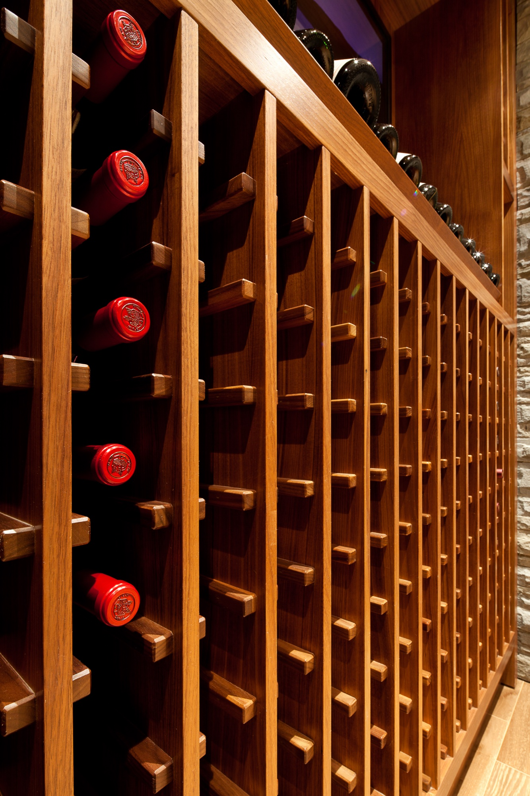

Slip-matching at room scale.
The logistics problem behind making a flitch run the room. Why the figure has to land at the door breaks, and how we sequence panels in shop order before the press.
Read
Field notes from the shop — written when we have something to say, not on a content calendar. The plan is for one or two pieces a month: a joinery deep-dive, a material study, the AWMAC 2027 submission progress, or whatever else the bench is wrestling with that month. Less marketing, more shop talk.
Editorial direction: how the work gets made, why we make choices the way we do, and what we learn from the projects on the floor. Written for architects, designers, builders, and the homeowners who care about how a flitch gets sequenced.

The logistics problem behind making a flitch run the room. Why the figure has to land where the eye lands — at the door breaks, at the appliance returns, at the line where a wall plane turns into a ceiling soffit. How we sequence panels in shop order before the press, and how every modification request post-glue-up gets weighed against losing the run.
Six pieces we're researching, writing, and shooting now. Each one is grounded in a specific project we've shipped or a technique we use daily. The blog launches with these and adds new pieces as we have something worth saying.
The logistics problem behind making a flitch run the room. Why the figure has to land at the door breaks, and how we sequence panels in shop order before the press.
Twelve layers of veneer, custom jigs, and a humidity-keyed spreadsheet that took fifteen years to build. How we get bent radii to hold their shape.
The West African hardwood behind the diamond ceiling. Open-grain, satin figure, holds raking light better than walnut at certain hours. A flitch-sourcing story.
Forty-three-sheet rift-and-smoked-oak package, currently on the bench. Notes as we work through the submission set — drawing review, mock-ups, finish samples.
Rick's BCIT-through-Wilms-through-Government-Street story. What stays the same when the shop floor evolves around you.
Not nostalgia. A specific choice about which details a machine can't make and still hold up under raking light. The case for bench-built joinery.
The above are the first six pieces we're working on. If you'd like a note when they go live, drop us a line.
Notify MeEight residential estate projects from across British Columbia. The vocabulary in built form — slip-matched walnut, diamond-bookmatched anigre, bent-laminated alder.
View Our Work